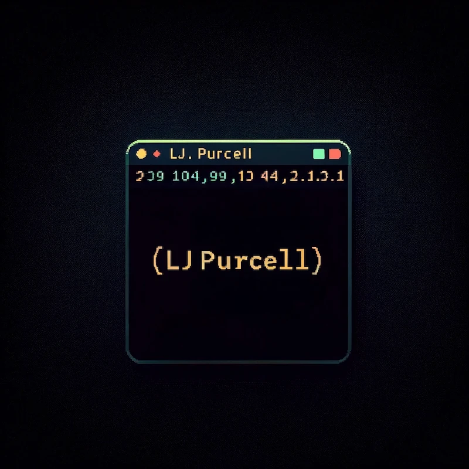
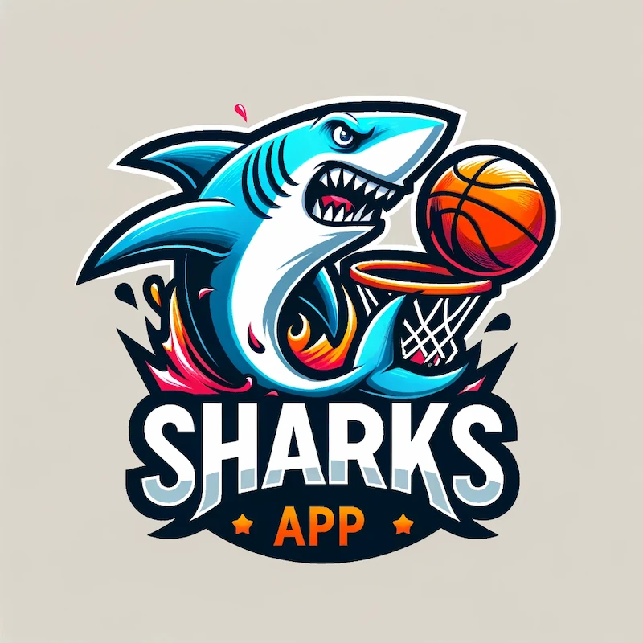
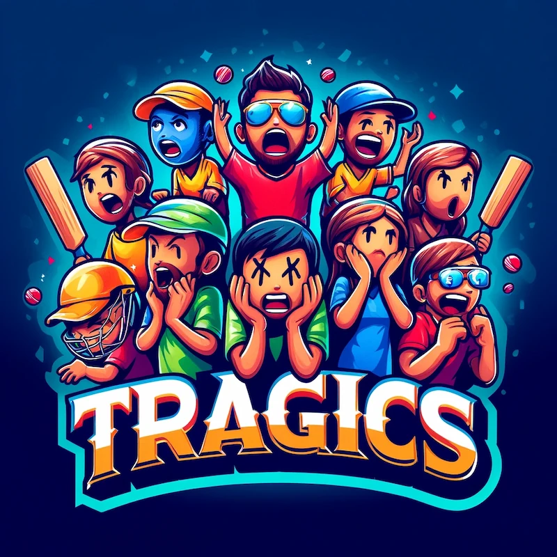
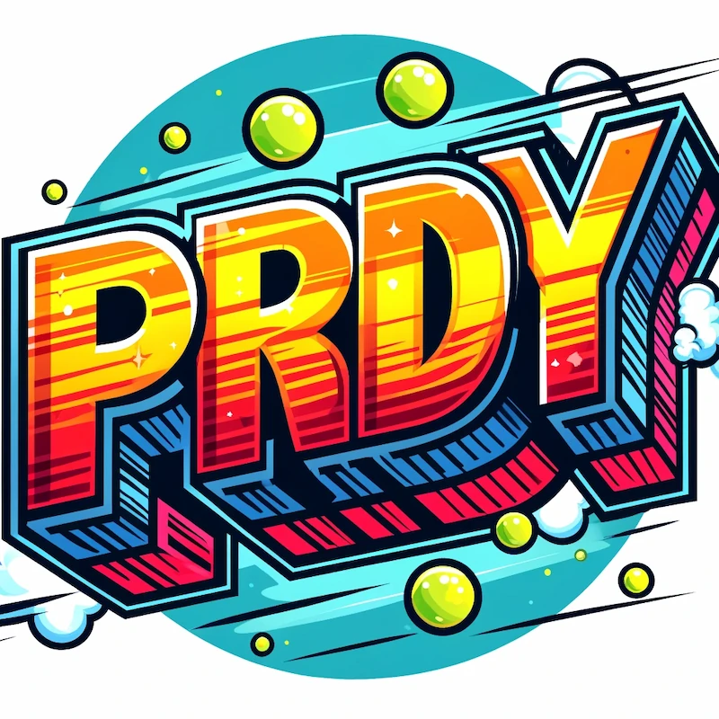
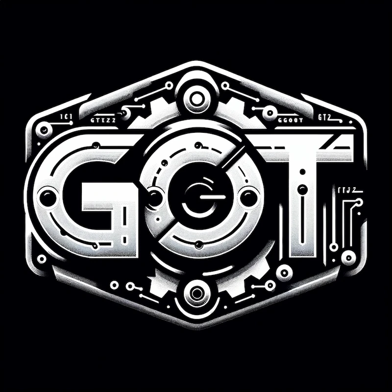

{{define "title"}}
Projects
{{end}}

{{define "main"}}
<h1>Projects</h1>
<div>
    <h2>Web</h2>
    <div class="grid grid-cols-1 gap-y-20 lg:gap-y-0 lg:grid-cols-3 gap-12">
        <a href="/project/portfolio">
            
            <h3 class="pl-1">Markdown Blog</h3>
            <div class="italic text-3xl leading-relaxed px-1 lg:text-base">
                This site! A site for development related things, such as projects and blog posts on programming and
                software engineering.
            </div>
        </a>
        <a href="/project/sharks">
            
            <h3 class="pl-1">SharksApp</h3>
            <div class="italic text-3xl leading-relaxed px-1 lg:text-base">
                A web app for your friendly neighbourhood Sharks basketball team. Includes features such as
                web scraping, user authentication, notifications, and more.
            </div>
        </a>
        <a href="/project/tragics">
            
            <h3 class="pl-1">Tragics</h3>
            <div class="italic text-3xl leading-relaxed px-1 lg:text-base">
                Supercoach for cricket, but with worse rules and an entirely broken point-system.
            </div>
        </a>
    </div>

    <h2>Command Line</h2>
    <div class="grid grid-cols-1 gap-y-20 lg:gap-y-0 lg:grid-cols-3 gap-12">
        <a href="/project/prdy">
            
            <h3 class="pl-1">Prdy</h3>
            <div class="italic text-3xl leading-relaxed px-1 lg:text-base">
                A command line tool to do the things a developer can forget before submitting a pull-request.
            </div>
        </a>
        <a href="/project/got">
            
            <h3 class="pl-1">Got</h3>
            <div class="italic text-3xl leading-relaxed px-1 lg:text-base">
                Got is a command-line application developed in Go, functioning as a basic version control system similar
                to Git.
            </div>
        </a>
        <a href="/project/fraudible">
            
            <h3 class="pl-1">Fraudible</h3>
            <div class="italic text-3xl leading-relaxed px-1 lg:text-base">
                A command-line tool that converts text to speech using the OpenAI API and sends the audio file via
                email, so you can listen on the go.
            </div>
        </a>
    </div>
</div>
{{end}}
